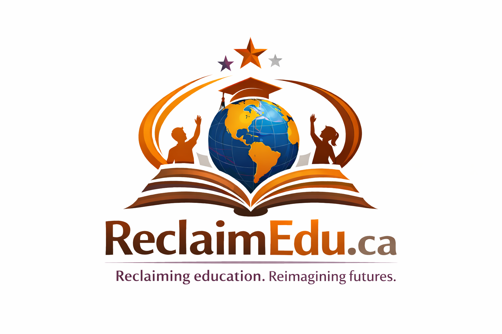

Reconciliation through Education. Empowerment through Learning.
Services we Offer
Policy and System Navigation
Support students and families in understanding BC’s education system (K–12, post-secondary, adult learning).
Advise school districts, colleges, and universities on Indigenous rights (UNDRIP, TRC Calls to Action, DRIPA) and equity policies for immigrants.
Conduct policy analysis to identify systemic barriers and recommend reforms.
Research & Program Development
Conduct needs assessments to identify educational gaps within Indigenous and immigrant communities.
Design and evaluate pilot programs (e.g., after-school tutoring, scholarship access, leadership training).
Partner with universities and community organizations to produce community-led research on equity in education.
Monitoring & Evaluation